Day 5｜星空、韓國奶奶與100公里—Puente la Reina → Estella
今天從 Puente la Reina 出發，走過 22.5 公里的山丘與田野，最後抵達 Estella。從星空下的摸黑出發、路上遇見的長者，到徒步里程正式突破 100 公里，這一天有風景，也有讓人記住很久的相遇。
星空下離開 Puente la Reina
今天再次摸黑出發。離開 Puente la Reina 時，街道還在睡夢中；走到皇后之橋附近，我抬頭竟看見滿天星斗，便架起相機拍下縮時攝影。等我收好器材回頭一看，同行夥伴已經走遠，只好趕緊追上。
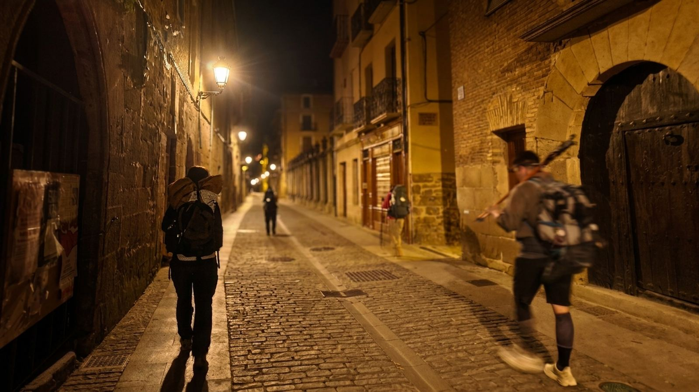

後來我一個人走到岔路，碰巧遇見一位老先生。我們互相打了招呼，決定結伴選擇上山。天色仍暗，彼此的腳步聲成了照應；有時候，最深的連結真的不需要太多語言。
在深山裡連續攀爬了一個多小時，終於翻越制高點。一路從黑夜走到天色漸亮，眼前的山稜線慢慢浮現，也讓人更清楚感受到：今天的起步，一點都不輕鬆。
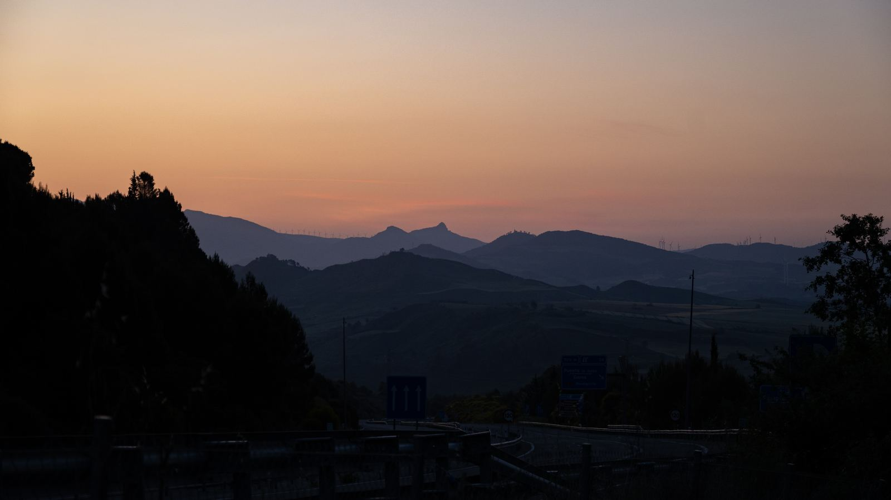
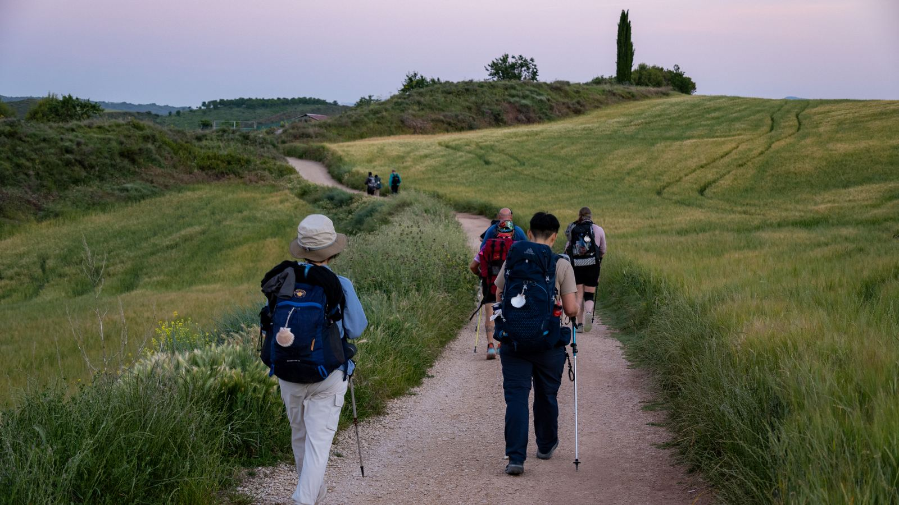
山路上的同行與 72 歲韓國奶奶
路上遇到一位獨自朝聖的 72 歲韓國奶奶。即使語言不通，她的開朗與勇氣仍然很有感染力。看著她背起背包、一步一步往前走，我再次感受到：年齡從來不是限制，真正重要的是願不願意繼續出發。
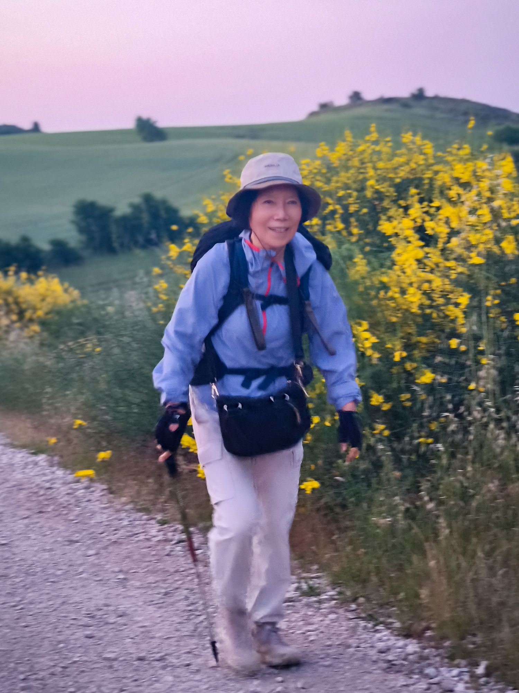
走在納瓦拉（Navarra）的鄉間，橄欖園、葡萄園與麥田交錯。近看是麥穗在晨風裡晃動，遠看則是朝聖者沿著田間小路，慢慢靠近一座座山坡聚落。
穿過納瓦拉的田野與小鎮
這一帶的田野風光很有層次。我也把空拍機升上天空，從高處看見朝聖者走過鄉間小路、村落與大片農田。走在地面時只看得到眼前的坡道，換個角度，才發現自己正穿越一幅很遼闊的風景。
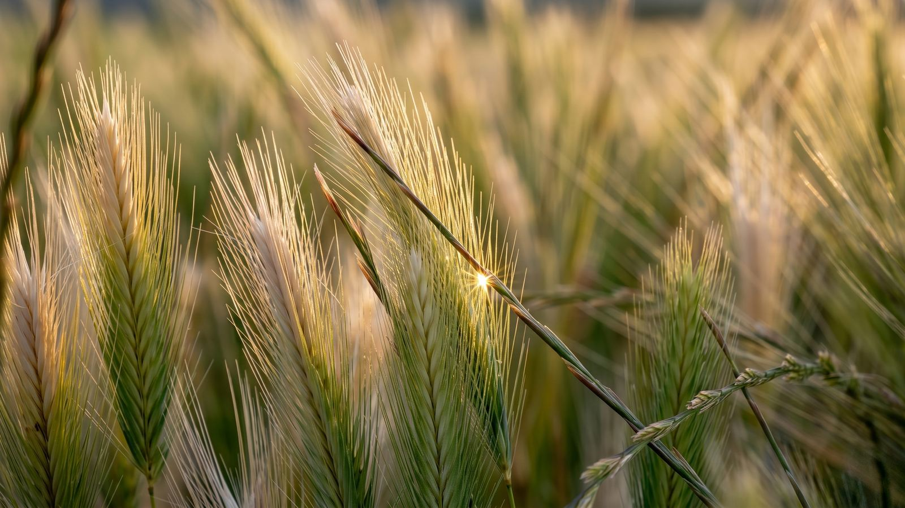
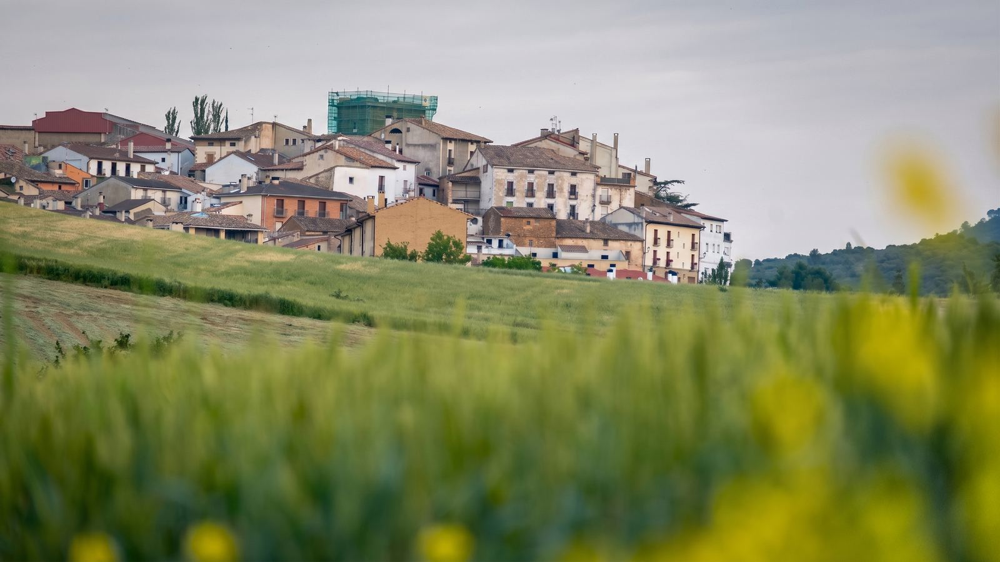
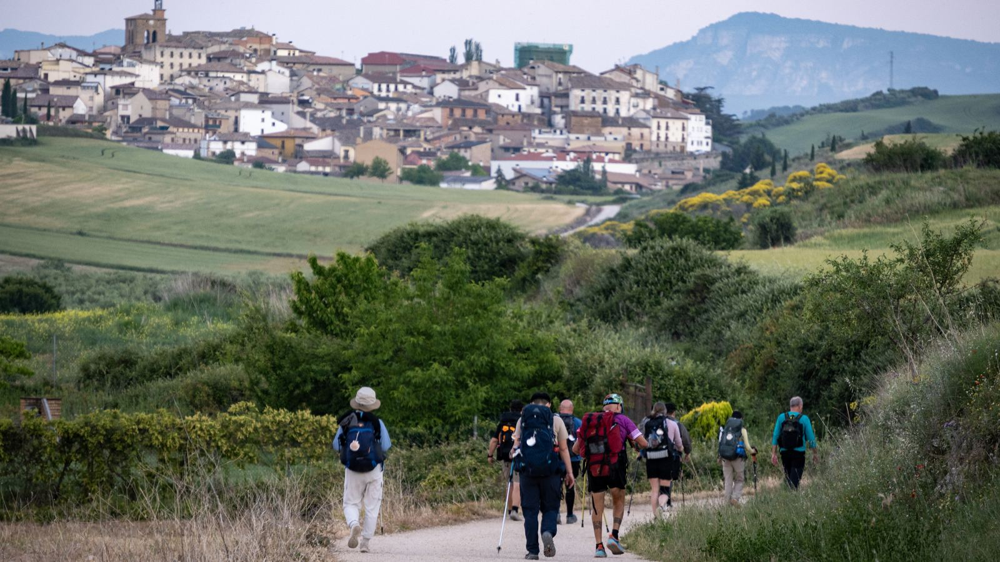
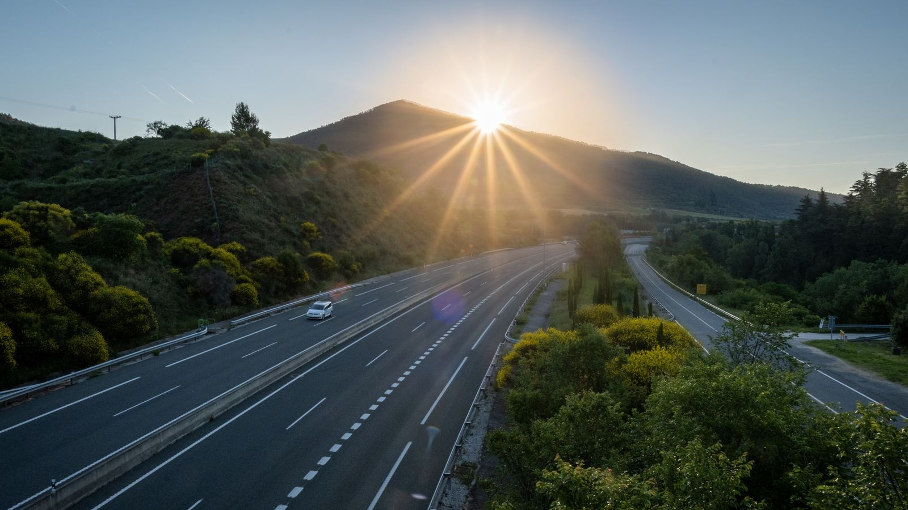
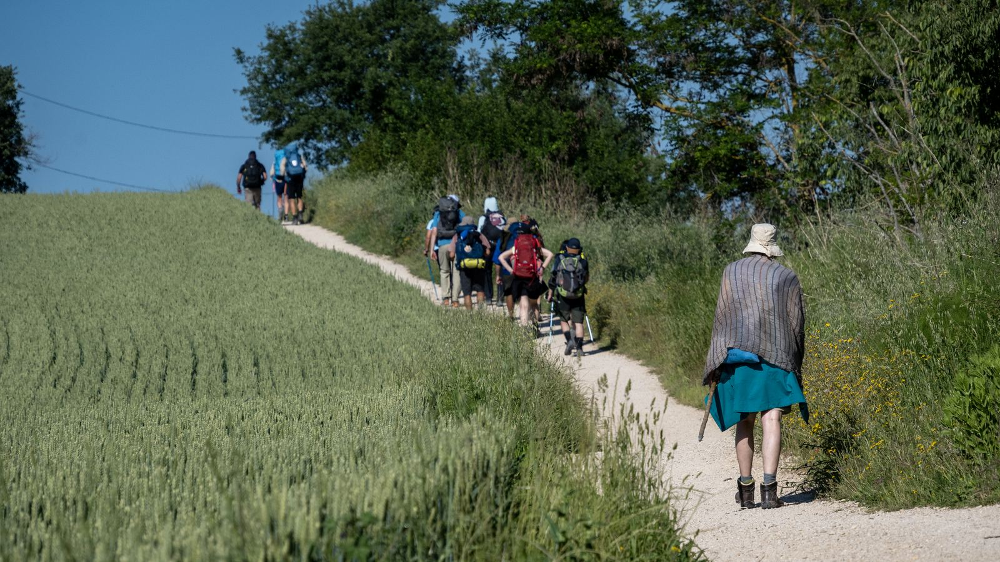
這段路線還有一個很特別的地方：朝聖者會直接穿過小鎮裡的一棟房子。經過時別只顧著往前走，記得停下來看看，裡面有印章可以蓋。
再往前，是石造教堂、窄巷與噴泉交織的中世紀小鎮風景。路上人煙不多，沒有必要一直追著別人的速度；我開始享受一個人走路、自己安排節奏的自在。
突破 100 公里，抵達星星之城
路過無人看管的自由捐贈水果攤，攤位上放著可以自行取用的水果，旁邊留下捐款方式。沒有人盯著，也沒有複雜的規則，大家依照自己的心意拿取、投幣。這種建立在信任上的小小善意，讓長路多了一點溫度。
早上十點多，太陽已經高高掛起，曬得人發昏；而我們的徒步里程，也正式突破 100 公里。走到這裡，考驗的早就不只是體力。比起一直看著終點還有多遠，我更提醒自己只專注眼前這一步。
終於抵達 Estella。這座城鎮的名字在西班牙語裡有「星星」的意思。走進古老街區，醫院、教堂、修道院與橋樑都和朝聖歷史緊緊相連，讓人感受到這座城市長久以來與朝聖者的關係。
今天入住的是 Estella 公立庇護所，一晚只要 €8。空間寬敞、能容納不少朝聖者，整體環境也很舒服。陽台上掛滿大家洗好的衣服，這大概就是朝聖生活最日常、也最真實的一面。
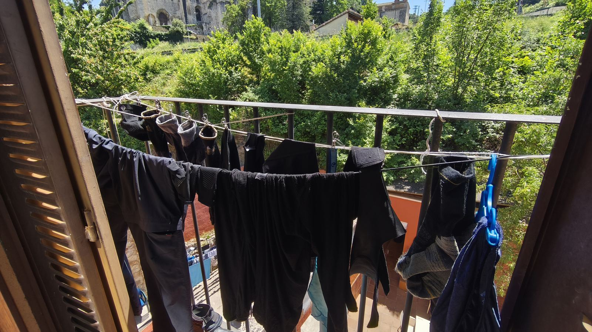
42 度熱浪裡，用一頓晚餐收尾
中午氣溫一路飆高，街角的溫度顯示已經來到 42°C。慶幸這幾天我們都堅持摸黑早起，盡量避開最熱的時段；在這樣的熱浪裡，提早出發不只是為了走得快，而是讓身體能安全地完成今天的路。
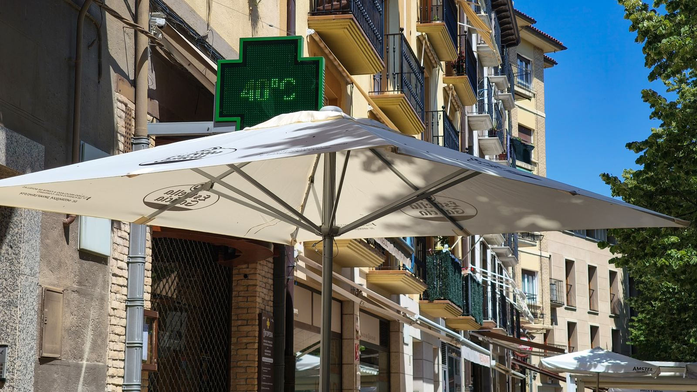
遇上週末，原本想參觀的 San Pedro de la Rúa 教堂沒有開放。我們改到小鎮餐廳吃朝聖者餐：前菜、牛排，再配上一杯冰啤酒。走了一早上的路，這頓飯就像把電量重新充滿，讓人終於可以放心坐下來休息。
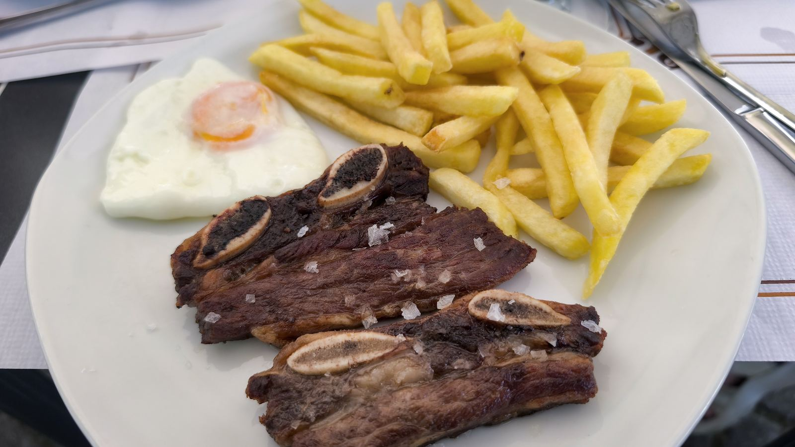
回頭想想，今天從星空下出發，一路走過山坡、麥田與小鎮，還遇見了不同年齡、不同國籍的朝聖者。100 公里不是旅程的終點，只是提醒自己：一步一步走，原來已經走了這麼遠。
📷 補充相簿｜沿途留下的小畫面
以下照片無法明確對應到某一個正文事件，因此保留在相簿，不硬套進故事。它們同樣是 Day 5 路上的一部分。
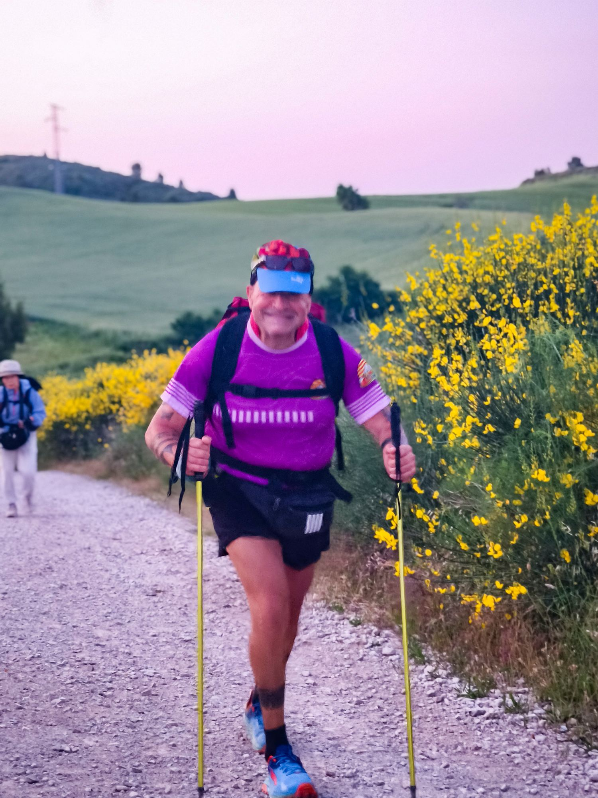
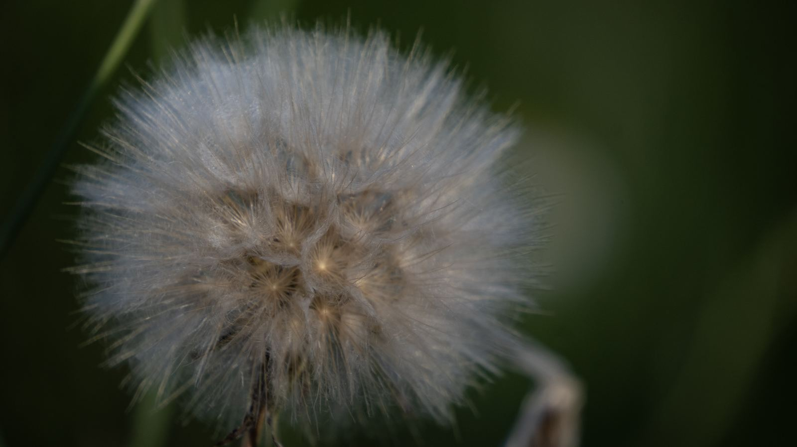
📚 朝聖者小百科：Estella 星星之城
Estella（艾斯特拉）在西班牙語中意為「星星」。11 世紀納瓦拉國王 Sancho Ramírez 為了服務朝聖者而推動建城，醫院、教堂、修道院與橋樑逐漸發展，讓這裡成為法國之路上重要的停靠城鎮。城內至今仍可見羅馬式教堂與古老建築的痕跡。
San Pedro de la Rúa：這座教堂是 Estella 的代表性歷史建築之一，若遇上開放時間，值得走上階梯看看老城景色；遇到週末或休館時，也可以把時間留給街區散步與補給。
今日實走紀錄：Puente la Reina → Estella，22.5 km；累積爬升 558 m、累積下降 490 m。中午曾遇到約 42°C 高溫，提早出發與補水尤其重要。